See what broke on any ROS 2 robot, from one REST API.
Your robot
ros2_medkit
to logs, actions and diagnostics
each fault, with its history, a snapshot and a rosbag
it all on one REST API, with every node it found
You